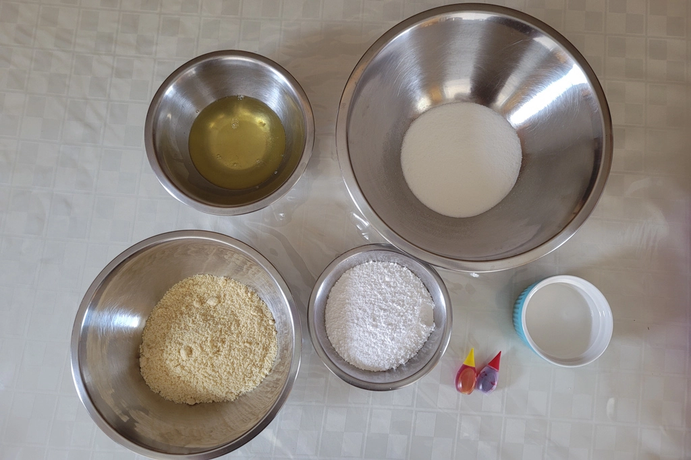
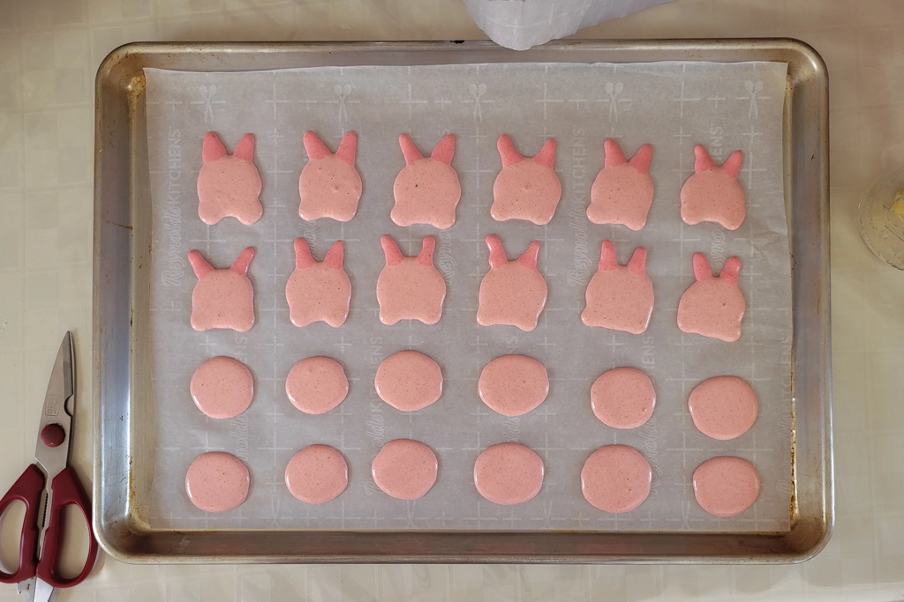
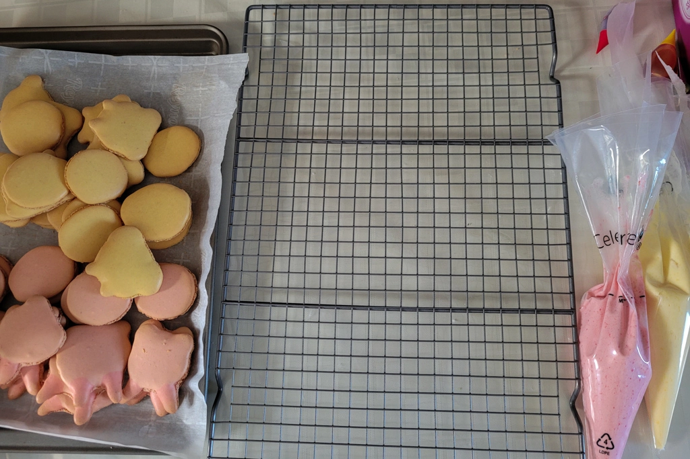
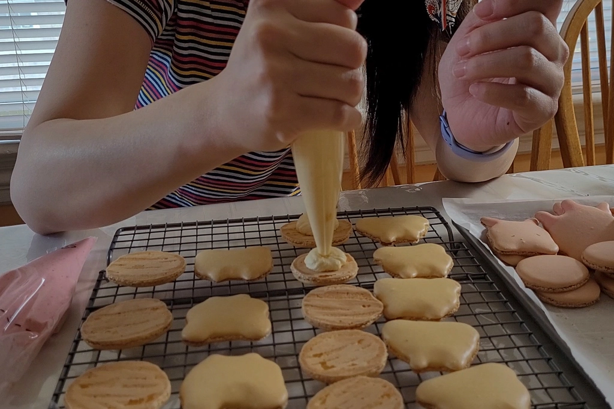
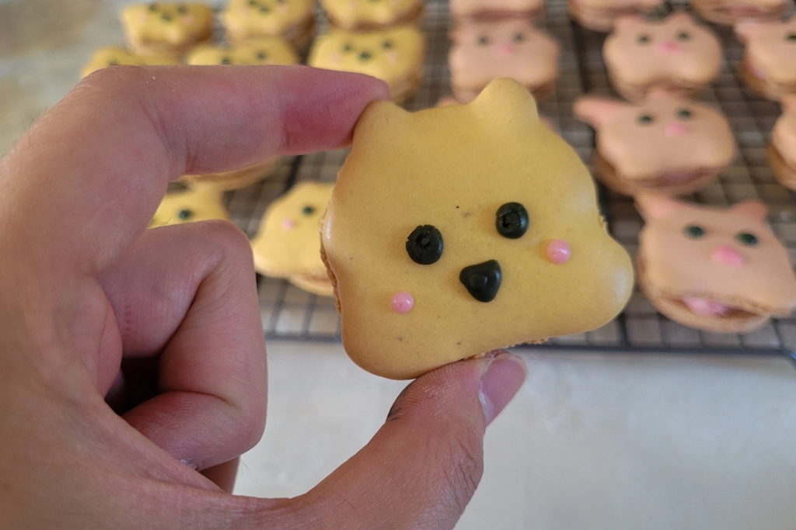
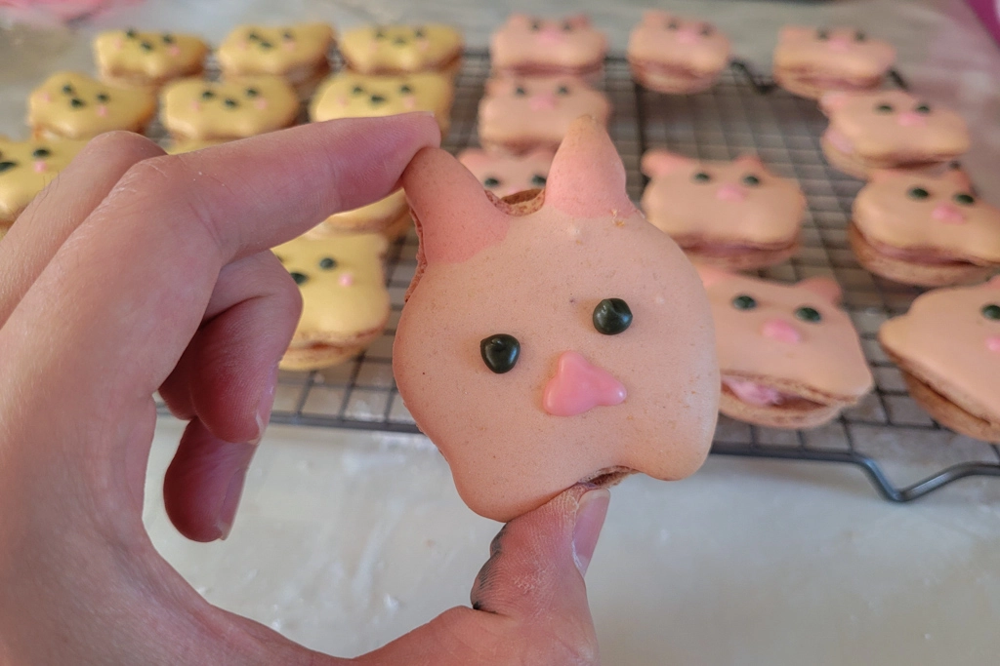
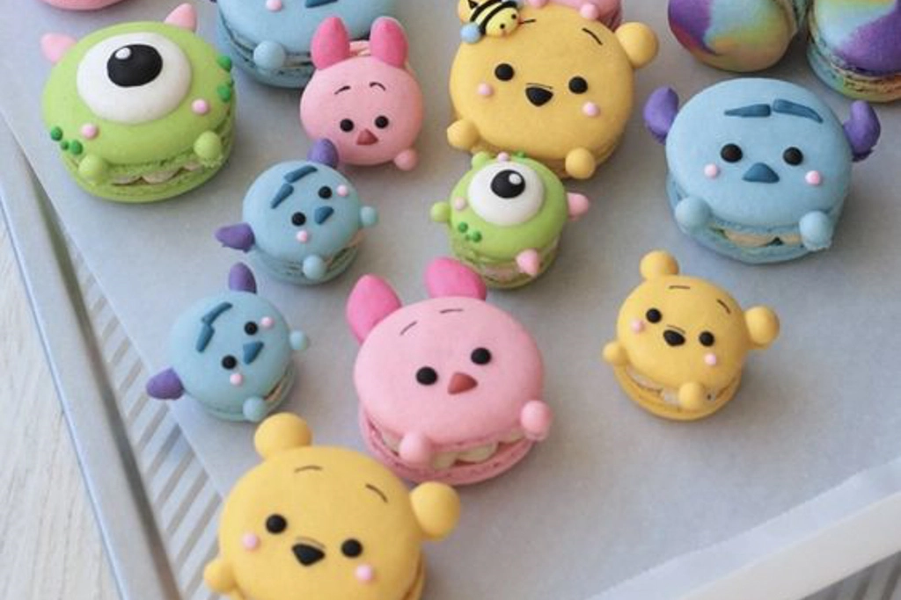
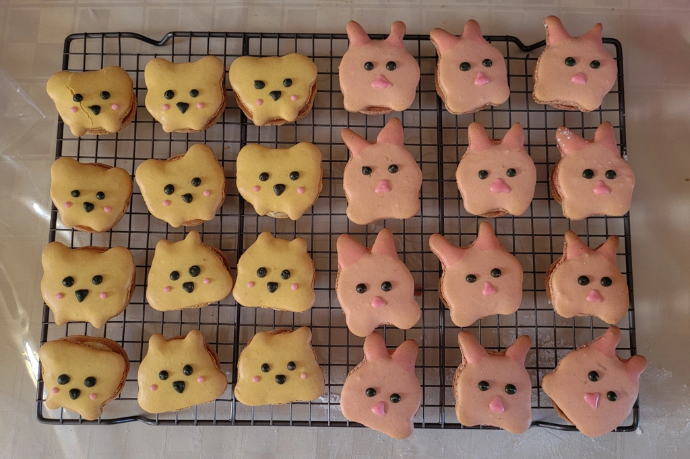

Making Disney Macarons
May 23 - Written by Emily
Having seen a bunch of themed macarons on Pinterest, I knew I had to give it a shot!
I’ve made macarons only a handful of times before in the past but they’ve always been very basic and simple. They’ve never been shaped or decorated into anything so I figured it was about time we gave it a shot. It was a no brainer when it came to choosing what to make as we’re both Disney fans and with Bonnie’s favorite being Winnie the Pooh, I had to make the iconic duo - Winnie the Pooh and Piglet.
After looking through a few recipes, I ultimately decided to follow the one from Cupcake Jemma but with some slight modifications as I only wanted to make one batter but in a few different colors. With overmixing being the main thing I was worried about, I only partially mixed the batter together before dividing the batter up into separate bowls to color and finish mixing. This method worked out very well; however, it was hard to tell if all the colors were mixed relatively the same.
With the batter complete, all that was left was the fun part, piping and decorating. However, I soon realized that the batter was slightly too runny and it was harder than expected to control the shapes. That led to some morphed blobs of dough but there wasn’t anything I could do at that point. My theory was I didn’t whip the meringue long enough to stiff peaks so that the overall consistency of the batter ended up being a little runnier than ideal. Nevertheless, I continued to pipe out all the macarons hoping they’ll resemble something.
Once I piped out all the batter and released the air bubbles, it was time to let the macarons rest and form a skin so that when they bake, they’ll get what's called feet. I’m not sure why its called that but I’ve heard somewhere that overmixing or undermixing can mess with whether or not the macaron develops it.
The time it takes for your macarons to rest is the perfect time to clean up or make the filling of your choice. I decided to go with a mango and raspberry buttercream as the colors matched the colors of my macarons. To make this buttercream, I created a mango and raspberry puree and added it to some plain buttercream. I originally intended to have some of the puree in the center of the macarons with a ring of the buttercream but I didn’t have enough puree to make that happen. Regardless, the buttercream came together quite nicely and wasn’t too sweet as I had full control over how much sugar to add.
After about 30 minutes, the macarons were ready to be baked. I baked them at 325 degrees Fahrenheit for about 12-15 minutes but I think they definitely didn’t need to be baked that long. If you make these, I suggest baking them for 10 minutes and then checking on them as to not overbake them slightly like I did!
After letting them cool on the tray, I transferred them to a cooling rack where I had everything prepared to assemble and decorate! For Winnie the Pooh, some of the ears looked more like cheeks than ears, so I turned some of them around so that the end result would be cuter. The Piglets on the other hand had to be the way they were piped so what was meant to be its paws/hands become part of its face. Assembling the macarons was probably the simplest step as it just required piping a dollop of buttercream onto the center of one macaron and then placing another one on top. To decorate, I made some royal icing and colored it to match the reference I was using but since I didn’t have any brown food coloring, mine turned out gray.


Before I even finished piping everything, I knew things weren’t going to look the way they are meant to look. I don’t even know if I can even call them Winnie the Pooh and Piglet because of how far off they look. I would however say that some of the “Winnie the Poohs” are quite cute.
This was my attempt at trying something I saw on Pinterest and the result wasn’t too bad but I can't say it was a success. Tastewise, they were a tad too sweet but the fruit flavors were present making it quite delicious overall.

Expectation

Reality
What could have been a complete disaster turned out a little worse than I had expected but it wasn’t too bad and if we take the taste into account, then it was more successful than our last baking challenge - though we were at a disadvantage there not having a proper recipe to follow. Nevertheless, I hope you enjoyed watching and reading about my journey making these Disney macarons!